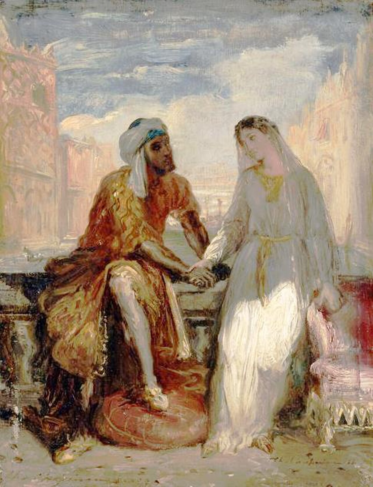
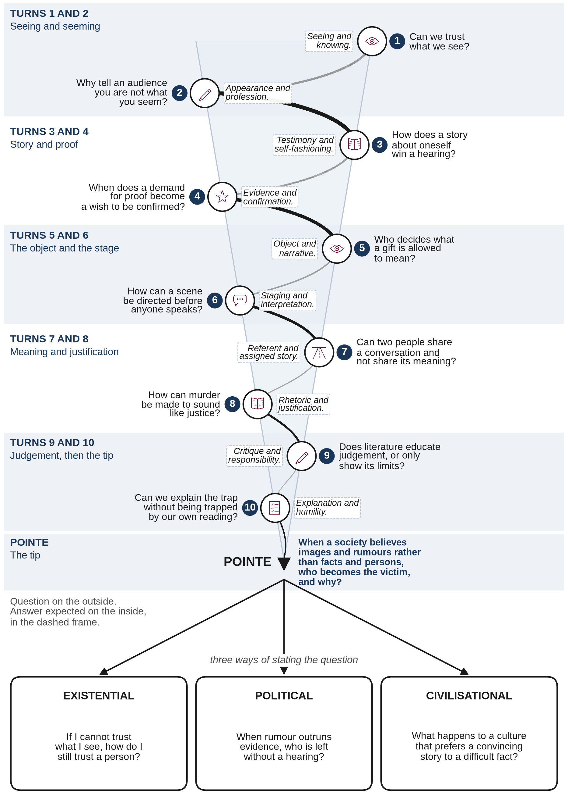

Anglais · Terminale · Spécialité LLCER · Lycée général et technologique
Passing the Flame
Othello, or the trap of theatrical illusion. A C1 sequence in English: ten lessons, the spirale de Gorse, a midpoint commentary and a summative assessment.
Anglais · Terminale · Spécialité LLCER · Lycée général et technologique
Othello, or the trap of theatrical illusion. A C1 sequence in English: ten lessons, the spirale de Gorse, a midpoint commentary and a summative assessment.
Without JavaScript, every lesson is on this page, one after another. The tabs above jump to each lesson.
Spécialité Langues, littératures et cultures étrangères et régionales, anglais, Terminale. Programme of the Bulletin officiel spécial n° 8 of 25 July 2019: « Arts et débats d’idées » and « Expression et construction de soi » (mise en scène de soi). Level C1.

Aim. To read Shakespeare’s Othello at C1 as a play about the trap of theatrical illusion.
The work asks how language, objects and staged looking can be made to mean what a speaker has already decided they mean. It prepares students for hypokhâgne and the first year of a Licence LLCER. It does not pretend to be those courses.
Level. C1 throughout. The demand is not divided into a lower tier and a later extension.
Dédicace
« À la mémoire du Professeur Pierre Spriet,
et à tous mes maîtres des classes préparatoires et de l’Université Bordeaux III,
qui m’ont appris à lire le monde entre les lignes.
Aux artistes de la Royal Shakespeare Company (Stratford-upon-Avon, 1984-85),
qui m’ont montré que l’amour du texte rend les êtres meilleurs.
Aux élèves de Terminale qui s’apprêtent à entrer en Hypokhâgne ou en Licence d’Anglais :
puisse cette flamme devenir la vôtre. »
Note d’intention
Ce dossier est né d’un élan de gratitude. Il ne prétend à aucun titre académique : il est le témoignage d’une amoureuse des mots, de la langue anglaise et de la langue française, dont toute la vie intérieure a été éclairée par des passeurs généreux. À travers une étude approfondie du piège théâtral dans Othello et quatre explications de texte modèles (dont la scène d’espionnage de l’Acte IV, scène 1), il invite les futurs étudiants à découvrir que la littérature n’est jamais un savoir mort, mais une école de lucidité et d’humanité.
The sequence is written in British English throughout, including the teacher’s notes. The dédicace and the note d’intention remain in this exact French.
Ten turns tighten towards a tip. The tip then opens into three paths: existential, political and civilisational. The French name of the method is kept. Méthode de la spirale de Gorse conçue par Madame Carole Paoli Pompougnac.

Each lesson lasts 55 minutes and is timed on 52, with a stopping point at about minute 44 and an eight-minute emergency exit. The midpoint commentary is sat after Lesson 5. Lesson 10 is the summative hour. The Shakespeare extracts are printed whole in the booklet, with line numbers, short glosses, a guiding question before reading, then numbered steps.
Turn. Can we trust what we see?
Today’s aim. Look carefully first. Then interpret. Do not invent a story the picture does not give.
Before you look. What can you actually see, and what are you already tempted to add?
The painting is Théodore Chassériau, Othello et Desdémone à Venise, 1849-1850, Musée du Louvre, RF 3897, public domain. The video essay and the dedication also open this lesson. The full looking exercise is in the booklet.
A short diagnostic closes the hour. The stopping point is at about minute 44.
Turn. Why tell an audience you are not what you seem?
A first contract with the spectator, in I.1. The complete speech is printed in the booklet, with line numbers and glosses.
Before you read. If a character tells us he is not what he is, what kind of listener have we already agreed to be?
I.1, Iago
I follow him to serve my turn upon him.
[…]
I am not what I am.
Glosses. Serve my turn: use him for my own purpose. I am not what I am: a refusal of being, and an invitation to watch with him.
Turn. How does a story about oneself win a hearing?
I.3: Othello before the Senate; Desdemona’s « I saw Othello’s visage in his mind »; Brabantio’s warning; « My life upon her faith ». The main speeches are printed whole in the booklet.
Before you read. In a formal hearing, what must a story do in order to be believed?
I.3, Desdemona
I saw Othello’s visage in his mind,
And to his honours and his valiant parts
Did I my soul and fortunes consecrate.
Glosses. Visage in his mind: she claims to have seen his face through his inner life, not first through his appearance. Consecrate: dedicate wholly.
Turn. When does a demand for proof become a wish to be confirmed?
III.3: the green-eyed monster, « Haply, for I am black », and the demand for ocular proof. The complete movements are in the booklet.
Before you read. What is the difference between wanting to know, and wanting to have one’s suspicion proved?
III.3, Iago, then Othello
O, beware, my lord, of jealousy;
It is the green-ey’d monster, which doth mock
The meat it feeds on.
[…]
Villain, be sure thou prove my love a whore;
Be sure of it; give me the ocular proof.
Glosses. Green-ey’d monster: jealousy that feeds on the person it torments. Ocular proof: proof that can be seen, as if seeing were enough.
Keep today’s vocabulary (ocular proof, probation, to over-read) ready for Lesson 5.
Turn. Who decides what a gift is allowed to mean?
A mandatory close reading of III.4. The main speeches are printed whole in the booklet: Emilia’s lie, the moist hand, the history of the gift, « what and if it were? », the self-begotten monster.
Before you read. The audience already knows that Emilia has taken the handkerchief. What kind of listening does that force on us now?
III.4, Desdemona, then Othello
It is not lost, but what and if it were?
A liberal hand. The hearts of old gave hands,
But our new heraldry is hands, not hearts.
Glosses. Heraldry: signs that claim to guarantee honour. What and if it were?: a hypothetical, innocent in grammar, dangerous in this scene.
A midpoint commentary on III.4 follows this lesson. The question and the grid are in the booklet.
Turn. How can a scene be directed before anyone speaks?
IV.1: Othello is made to watch a scene whose meaning has already been prepared for him. The extract, including the asides, is printed whole in the booklet.
Before you read. If we already know what we are supposed to see, can we still watch?
IV.1, Iago, then Othello
Stand you awhile apart;
Confine yourself but in a patient list.
[…]
[Aside.] Now will I question Cassio of Bianca.
Glosses. Patient list: a place from which to listen, as if in a theatre. [Aside.]: a stage direction: Iago speaks to us, not to Othello.
Lesson 7 returns to the same conversation, now mapped for meaning.
Turn. Can two people share a conversation and not share its meaning?
The extract is the same complete passage as in Lesson 6. Keep it open. Today the work is not the first shock of watching, but a careful map of meaning: Bianca, the handkerchief, and the story assigned to her.
Before you re-read. Who, in this exchange, shares a referent, and who only shares words?
IV.1, Cassio, of Bianca
She was here even now; she haunts me in every place.
[…] I was the other day talking on the sea-bank with certain Venetians,
and thither comes the bauble, and falls me thus about my neck.
Glosses. Bauble: a plaything, here a contemptuous name for Bianca. Falls me thus about my neck: a gesture Othello is forced to misread.
Turn. How can murder be made to sound like justice?
V.2: « Put out the light », and later « Speak of me as I am ». The speeches are printed whole in the booklet.
Before you read. What must a language do, if it is to make a killing sound like a duty?
V.2, Othello
Put out the light, and then put out the light.
[…]
Speak of me as I am; nothing extenuate,
Nor set down aught in malice.
Glosses. Put out the light: first a candle, then a life, on the same verb. Nothing extenuate: do not soften what I have done.
Turn. Does literature educate judgement, or only show its limits?
Public-domain critics (Rymer, Johnson, Coleridge, Hazlitt, Bradley), and a short comparison with François-Victor Hugo’s public-domain French. Modern critics may be named, not quoted at length. Yves Bonnefoy and Jean-Michel Déprats are not used.
Before you read. A useful question: can we describe Iago’s intelligence without being seduced into admiring it?
A C1 response does not simply call Rymer unkind. It asks what he has seen (the apparent disproportion between a piece of cloth and a murder) and what he has refused to see (that the cloth is not the cause, but the object onto which a method of reading has been forced). Lesson 5 is the best preparation for answering him.
Prepare Lesson 10. Revise the model close readings (I.1, I.3, III.4, IV.1, V.2). The commentary question and the director’s oral task are in the booklet.
Turn. Can we explain the trap without being trapped by our own reading?
The summative hour. A commentary and a short director’s commentary. The question, the timing and the grids are in the booklet.
The commentary question. How does Shakespeare make Othello a spectator of his own deception?
Write a precise thesis. Quote briefly. Keep the demand at C1. The last eight minutes can finish the written task, or open the short director’s oral if the commentary is already closed.
Four documents, each in PDF, Word and LibreOffice. You may use and adapt these documents, with credit to their author, without commercial use, and share your versions under the same conditions. CC BY-NC-SA 4.0.
Student sequence (35 pages)
PDF Word (.docx) LibreOffice (.odt)Teacher’s sheet (4 pages)
PDF Word (.docx) LibreOffice (.odt)Correction sheet (11 pages)
PDF Word (.docx) LibreOffice (.odt)Accessible version: ten autonomous fiches (18 pages)
PDF Word (.docx) LibreOffice (.odt)Madame Carole Paoli Pompougnac
conçu par Madame Carole Paoli Pompougnac, mis en page par Grok. Théodore Chassériau, Othello et Desdémone à Venise, 1849-1850, Musée du Louvre, Paris, RF 3897, public domain. Diagram of the spirale de Gorse and pictograms: original illustrations. Méthode de la spirale de Gorse conçue par Madame Carole Paoli Pompougnac.